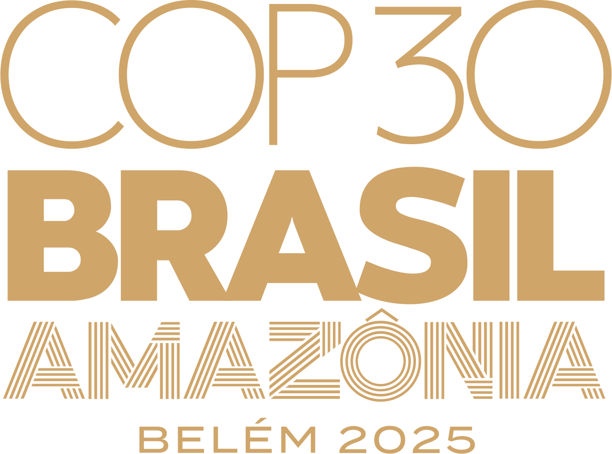
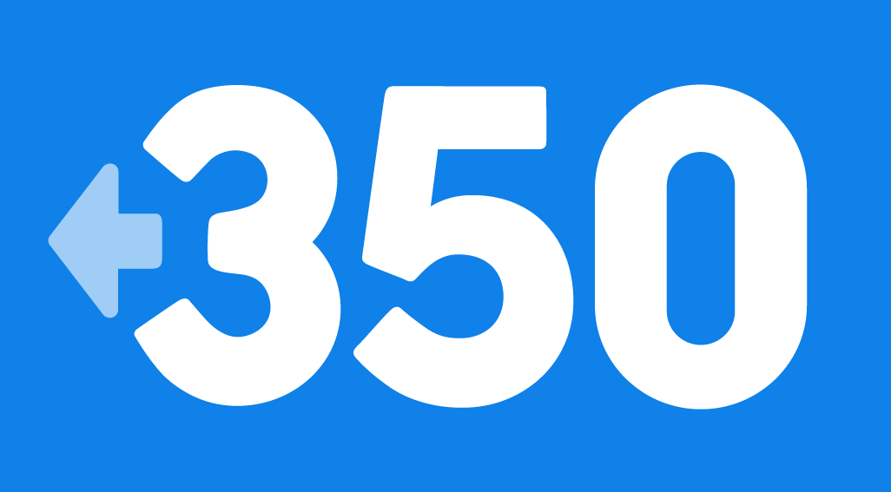
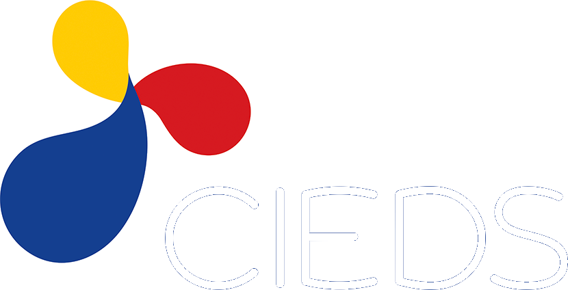
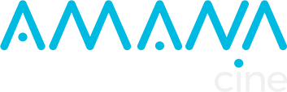
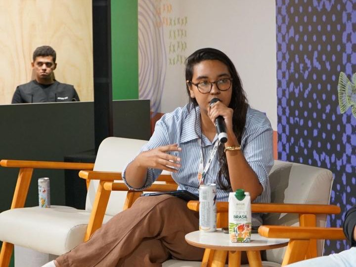
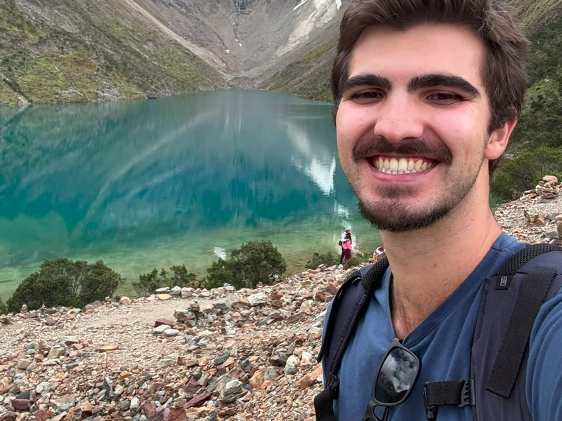
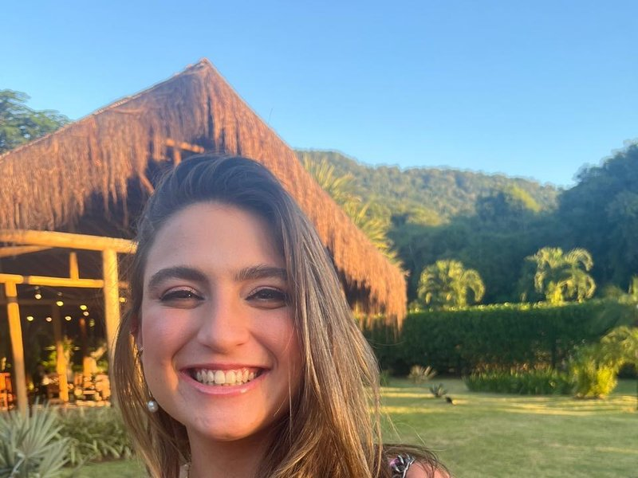

Campanha Anti Fake News
Combate à desinformação com narrativa de grande alcance — mais de 19 milhões de visualizações orgânicas.
Ver detalhes →Através do mercado de influência, defendemos a ciência, a democracia e o meio ambiente. Conectamos criadores, dados e narrativa para mover a opinião pública em torno do que importa.
Estruturamos nossa atuação em três frentes de impacto público. Cada eixo tem linguagem, comunicadores e identidade próprios. Conheça, em cada um, campanhas que já executamos para clientes e parceiros.
Direitos humanos, justiça social e combate à desinformação. Ampliamos o acesso a informações confiáveis e estimulamos a participação cidadã por meio de narrativas acessíveis e estrategicamente distribuídas.
Combate à desinformação com narrativa de grande alcance — mais de 19 milhões de visualizações orgânicas.
Ver detalhes →Podcast sobre política e democracia, reunindo especialistas e lideranças do campo progressista.
Ver detalhes →Tradução de temas complexos em linguagem acessível. Aproximamos a sociedade do conhecimento científico e fortalecemos o engajamento com a divulgação, a pesquisa e a inovação.
Com a Secretaria Municipal de Ciência e Tecnologia do Rio — mais de 10 milhões de visualizações.
Ver detalhes →Campanha pela regulamentação da IA no Brasil: 8 milhões de visualizações orgânicas e +20 mil assinaturas.
Ver detalhes →Articulação de pesquisadores e comunicadores em defesa da ciência e do debate qualificado.
Ver detalhes →Comunicação ambiental e climática que conecta projetos e resultados a um público amplo. Mobilizamos audiências em torno da pauta socioambiental com narrativa e estética próprias.
Série de vídeos sobre meio ambiente e clima que alcançou mais de 4 milhões de pessoas.
Ver detalhes →Conscientização climática: evento presencial com +200 pessoas e 3,5 milhões de visualizações.
Ver detalhes →Adaptação de reportagens ambientais para o formato nativo das redes: 3 milhões de visualizações.
Ver detalhes →Hub de influenciadores para mobilização climática rumo à COP30, em Belém.
Ver detalhes →As plataformas digitais se consolidaram como principal porta de entrada para notícias e conteúdos de interesse público. A confiança depositada nos criadores evidencia o potencial estratégico do marketing de influência.
dos brasileiros acessam notícias diariamente por plataformas digitais.
usam as redes sociais como principal fonte de informação política.
de brasileiros estão presentes nas redes sociais.
utilizam o WhatsApp com frequência no dia a dia.
acreditam que as redes influenciam a opinião pública.
já realizaram compras após recomendações nas redes.
Fonte: pesquisa Quaest/2025 e Relatório de Influenciadores Digitais Influence.me/2026.
Nosso portfólio de comunicadores soma mais de 80 milhões de seguidores, organizados em hubs temáticos. Já atuamos em mais de 10 países — e nossa rede alcança todos os continentes.
seguidores somados na nossa rede de comunicadores.
países onde já executamos campanhas.
Para além das campanhas e produções, publicamos artigos e relatórios sobre o ecossistema de influência, comunicação e opinião pública.
Reflexões sobre influência digital, democracia, ciência e clima — do olhar de quem opera o mercado por dentro.
Mensuração de campanhas e leituras do ecossistema de influência, com metodologia própria.
Fale com a gente →
Desenvolvemos podcasts e videocasts — próprios e para parceiros — em formatos que aproximam temas contemporâneos de novas audiências.
Proibido Pisar na Grama
Videocast sobre meio ambiente, num formato de conversa que aproxima o público de temas ambientais.
Podcast
Videocast dedicado a reflexões sobre arte e filosofia, com abordagem sensível e estética autoral.
Podcast
Cultura popular e tradições boêmias, explorando suas expressões artísticas e sociais.
Caminhos do Progressismo
Videocast sobre política e democracia, reunindo lideranças e especialistas do campo progressista.
Conteúdos autorais e sob demanda: vídeos institucionais, séries documentais, podcasts e peças para redes e plataformas.
Posicionamento, calendário de conteúdo e gestão de comunidade orientados a dados e ao objetivo de cada cliente.
Da definição de objetivos à curadoria de influenciadores e à mensuração — campanhas que convertem alcance em ação.
Estúdio próprio e time multidisciplinar — roteiro, captação, edição, design e estratégia — com execução completa.




Fundada em 2024, a INDICA desenvolve estratégias de comunicação voltadas à produção de conteúdos relevantes e ao engajamento de diferentes públicos. Unimos repertório de influência, leitura de dados e produção audiovisual para transformar pautas complexas em narrativas que circulam.
Divulgador científico e estrategista digital. Economista pela UFRJ, pesquisa a economia dos influenciadores digitais.
Advogado e comunicador digital, atuando nos ramos da geopolítica, da economia e do Estado brasileiro.
Gestor público pelo IPPUR/UFRJ e estrategista político. Secretário executivo do Núcleo Ypykuéra e sócio fundador da INDICA.

Estrategista política, com mais de 5 anos em gestão de comunicação. Graduanda em Direito pela UFRJ, pesquisa políticas públicas e relações governamentais.
Geógrafo pela UFRJ, pesquisador, roteirista e gestor de projetos.

Pesquisador e educador. Biólogo pela UFRJ e mestre pela UERJ, estuda mecanismos para a conservação da biodiversidade.
Bióloga e mestranda em Geociências pela UERJ, atua em mudanças climáticas e cidades inteligentes, com foco em climatologia urbana e justiça climática.

Mobilizadora digital em impacto social, é advogada pela UFRJ e pesquisadora em Direitos Humanos e Biopolítica.
Graduanda em Direito pela UNIRIO, com pesquisa em licenciamento ambiental. Atua como assistente de campanha em comunicação digital.
Produtor audiovisual, com foco na coordenação, produção e edição de conteúdos para projetos de mobilização digital e impacto social nas redes. Graduando em Direito pela UFRJ, com pesquisas voltadas à concretização do direito à educação.
Editor de vídeo, motion designer e designer gráfico, especializado em produção audiovisual e comunicação visual para mídias digitais.
Conte para a gente o que você quer comunicar. A INDICA desenha a estratégia, a produção e a rede de influência — do briefing à mensuração.